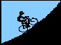

|
Hillclimb Overview
|
Club and Category Standings
|
Rider Feedback
|
NCNCA Road page
|
Week 5: Mount Diablo Hillclimb Results

Low-Key HillClimb Series Results:
Climb #5 - Mount Diablo (South Gate Road -> Summit Road)
distance = 11.1 miles; net climbing = 3250'
11/04/95
Start: Athenian School.
Finish: Parking lot at summit.
Format: mass-start
Rider Team S Category Time
Duffy, Phil Valley Spokesmen m 4 00:56:01
Waltjen, Lance Delta Velo m None 00:58:25
Hsu, Brian NA m 5 00:58:31
Gloli, Jim Valley Spokesmen m none 00:58:41
Wilkinson, Jim NA m None 00:59:03
Gatch, Rod San Jose Bicycle Club m 44+ 00:59:48
Cutts, Christopher NA m None 01:00:55
McCleary, Tom Colored Spokes m Married, 1 Dog 01:02:45
Lafayette, Andre NA m None 01:03:03
Herms, Richard Team Adventure m 35+ 01:04:02
Miller, Ed None m 55+ 01:04:18
Wilder, Mike San Jose Bicycle Club m 40+ 01:05:37
Alafouzos, John Team Adventure m 40+ 01:05:52
McDermand, Bob San Jose Bicycle Club m 50+ 01:07:34
Bone, Richard Western Wheelers m 28 year old English 01:07:42
Smith, Wayne Alto Velo/ALEVE m 4 - unplugged 01:07:57
Fulton, Dick NA m Old bike, old body 01:08:06
Rodamaker, Mark Alto Velo/ALEVE m Grandfather 01:09:16
Benishin, Liz Alto Velo/ALEVE w 3 01:09:32
Leary, Brendan Alto Velo/ALEVE m 5 01:10:10
Fisher, David Alto Velo/ALEVE m 5 01:11:49
Maurer, Joseph Apple m 44+ 01:12:38
Petroski, Pete Western Wheelers m Beyond 01:13:12
Hutchinson, Marcia Alto Velo/ALEVE w 3 01:20:27
Pereira, Lucas NA m 200+ (gross wt) 01:20:34
Cawthorn, Brian Team FRED m None 01:25:04
Butts, Fred Team FRED m 7 01:26:45
Hopping, Damien NA m None 01:46:50